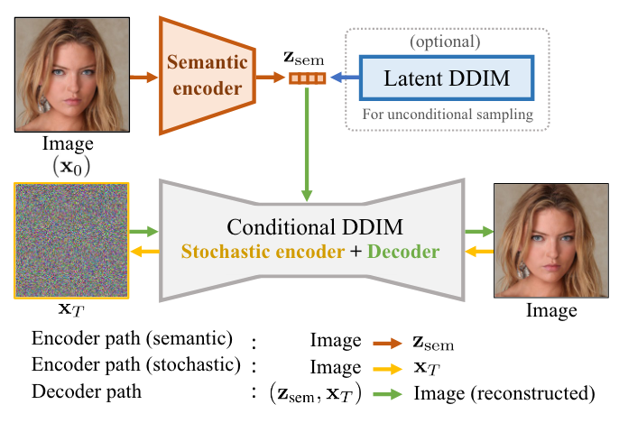
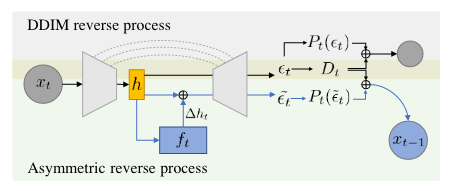

扩散模型应用·寻找语义空间
\[ \newcommand{\x}{\mathbf x} \]
封面来自 CivitAI.
Diffusion Autoencoders
CVPR 2022 2021.11.30
尽管扩散模型的生成效果非常好，但是它缺乏有语义的隐空间，给一些下游应用带来了麻烦。即便是 DDIM 的确定性采样过程，其隐空间，即 \(\x_T\) 所在空间也不理想，典型表现就是 DDIM 的插值结果并不是平滑变化的。Diffusion Autoencoders 希望构造一个像 GANs 和 VAEs 一样方便操纵的隐空间，能够平滑地插值、控制语义和编辑图像属性。为此，作者设计了如下架构：

Semantic encoder 是一个卷积编码器，目的是提取输入图像的语义特征 \(z_\text{sem}\)；Conditional DDIM 是以 \(z_\text{sem}\) 为条件输入（通过 AdaGN 融入）的扩散模型，可以把 \(\x_0\to\x_T\) 过程看作“编码器”，\(\x_T\to\x_0\) 过程看作“解码器”；Latent DDIM 稍后再做解释。在这个架构下，\(z_\text{sem}\) 和 \(\x_T\) 共同形成了输入图像的隐空间。前者编码语义信息，让我们能够操纵生成图像的各种属性（如人的性别、年龄、微笑）；后者编码了 \(z_\text{sem}\) 遗留的其他信息，往往是一些随机细节。二者共同作用，既有扩散模型能够几乎完美地重建输入图像的优势，又得到了 high-level 的语义表征 \(z_\text{sem}\) 供下游任务的使用。
现在，如果我们想用 Diffusion AE 做无条件生成，会发现一个问题——不知道 \(z_\text{sem}\)，所以我们必须为 \(z_\text{sem}\) 建模，这就是 Latent Diffusion 的用途。当然，任何生成模型都可以用来建模 \(z_\text{sem}\)，只是作者觉得扩散模型更好罢了。因为 \(z_\text{sem}\in\mathbb R^{512}\)，所以 Latent Diffusion 的模型 backbone 是一个十几层的 MLP，效果还不错。
说了这么多，这个隐空间究竟是不是像作者声称的这么好，还得实验来证明——
- 在第一个实验中，作者固定 \(z_\text{sem}\) 不变，随机采样 \(\x_T\)，发现生成的结果也大体不变，只有细节改变，这证明了 \(z_\text{sem}\) 和 \(\x_T\) 确实一个编码图像语义、另一个编码随机细节。
- 在第二个实验中，作者在隐空间中插值（\(z_\text{sem}\) 用的线性插值，\(\x_T\) 用的球面线性插值），并与 DDIM 和 StyleGAN 做比较，发现 Diffusion AE 既能得到像 StyleGAN 一样平滑的插值过程，也能像 DDIM 一样完美地重建插值端点。
- 前两个实验证明作者设计的隐空间的确非常优秀，于是我们可以依靠它来编辑图像属性。通过在 \(z_\text{sem}\) 空间中训练一个线性分类器，我们能得到某属性（如微笑）的方向向量，然后在 \(z_\text{sem}\) 上加减方向向量即可。\(\x_T\) 不用改动，因为第一个实验已经证明它和 high-level 语义关系不大。
- 第四个实验作者定量比较了 Diffusion AE 和其他生成模型的重构性能，并消融了不同大小的 \(z_\text{sem}\) 和是否有 \(\x_T\) 对重构的影响。
- 从扩散模型的角度，Diffusion AE 能够“加快”去噪。这里的加快不是指减小时间步，而是指 \(t\) 时刻模型预测的 \(\hat\x_{0\vert t}\) 更加准确。在原始的扩散模型中，我们用 \(p_\theta(\x_{t-1}\vert\x_t)\) 近似 \(q(\x_{t-1}\vert\x_t,\x_0)\)，是因为 \(\x_0\) 是未知的——如果知道，我们就没必要捣鼓一个扩散模型来生成了。但是现在由于 \(z_\text{sem}\) 提取了 \(\x_0\) 的许多信息，所以用 \(p_\theta(\x_{t-1}\vert\x_t,z_\text{sem})\) 来近似 \(q(\x_{t-1}\vert\x_t,\x_0)\) 就相当于作了弊，当然能够更快的去噪了。
- 作者进一步探索了 few-shot conditional 生成。给定目标类别的分类器 \(p_\gamma(c\vert z_\text{sem})\)，通过拒绝采样得到 \(z_\text{sem}\)，然后生成样本。
- 最后测试无条件生成的性能，证明 Diffusion AE 相比一般的扩散模型并不会对图像质量带来损失。
点击查看 Diffusion Autoencoders 的生成样例（摘自官网）


Asyrp
ICLR 2023 notable top 25% 2022.10.20
这篇论文的名字其实叫做 Diffusion Models already have a semantic latent space，也是相当直白了。具体而言，设隐变量为 \(h\)，当我们做出变动 \(\Delta h\) 时，要求满足下列性质：
- 同质性：对于不同的样本，同样的 \(\Delta h\) 会导致这些样本有着类似的改变（而不是各变各的）。
- 线性：改变 \(\Delta h\) 的大小能够控制样本改变的程度；对多个 \(\Delta h\) 的线性组合能够控制样本同时朝多个方向改变。
- 健壮性：\(\Delta h\) 能够无损地编码原图。
- 时间一致性：对于扩散模型来说，各个时间步下 \(\Delta h_t\) 应该大抵一致。
之前的工作 Diffusion Autoencoders[1] 通过训练一个编码器来人为构造了一个隐空间，而本文作者指出——训练好的扩散模型本身就有一个有语义的隐空间了，不需要专门去学习一个，这个隐空间就是 U-Net 的 bottleneck 的输出，作者称之为 "h-space"（我猜取这个名字是因为大家在写代码的时候喜欢把中间层变量命名为 \(h\) 吧～）。空口无凭，怎么证明这个隐空间确实有语义呢？结合文本编辑图像的思路，只要我们对特定的属性，如 smiling，找到它的 \(\Delta h\)，那就说明隐空间中确实有一块区域表示“微笑脸”，任何一个隐变量只要加上 \(\Delta h\) 就能生成微笑的人脸。为了找到 \(\Delta h\)，作者提出以下方法。

如图所示，作者在 h-space（就是预训练扩散模型的 U-Net 的 bottleneck 输出）后面用一个可学习的小网络 \(f_t\)（两层 1x1 卷积构成）来输出 \(\Delta h_t\)，然后训练 \(f_t\) 让生成的人脸笑起来，这样就能得到“微笑”这个语义的 \(\Delta h\) 了。这其实也是一个文本编辑图像的过程，做法和 DiffusionCLIP 类似，只不过 DiffusionCLIP 是微调整个 U-Net，而本文只训练一个很轻量 \(f_t\). 损失函数如下： \[ \mathcal L^{(t)}=\lambda_\text{CLIP}\mathcal L_\text{direction}(P_t^\text{edit},y^\text{tar};P_t^\text{source},y^\text{source})+\lambda_\text{recon}|\x_t^\text{edit}-\x_t^\text{source}| \] 其中 \(P_t^\text{edit}\) 指每一步预测的 \(\x_0\)（这是论文的记法，我常写作 \(\x_\theta(\x_t,t)\) 或者 \(\hat\x_{0|t}\)），重构损失作为正则项防止编辑过头。
本文另一个贡献是把逆向采样过程分成了三段：前期用改动的网络做 DDIM 采样来编辑；中期编辑得差不多了，就用原本的网络做 DDIM 采样；后期切换成 DDPM 采样来增加随机细节、提升图像质量。至于什么时候切换不同的采样方式，作者提出了两个指标分别量化编辑强度和采样质量，此处不再赘述，感兴趣的读者可以参看论文 Section 4.
最后，读者可能想问标题的 Asyrp 是什么、上图中的 \(D_t\) 是什么，这其实是本文的一个败笔。它用了一个过于简单的假设证明了 guidance 技巧没用，也是遭到了所有审稿人的质疑。幸好寻找有语义的隐空间这一点做得十分突出，大家还是一致倾向于接收本文。
点击查看 Asyrp 的生成样例（摘自官网）


References
- Preechakul, Konpat, Nattanat Chatthee, Suttisak Wizadwongsa, and Supasorn Suwajanakorn. Diffusion autoencoders: Toward a meaningful and decodable representation. In Proceedings of the IEEE/CVF Conference on Computer Vision and Pattern Recognition, pp. 10619-10629. 2022. ↩︎
- Kwon, Mingi, Jaeseok Jeong, and Youngjung Uh. Diffusion models already have a semantic latent space. arXiv preprint arXiv:2210.10960 (2022). ↩︎